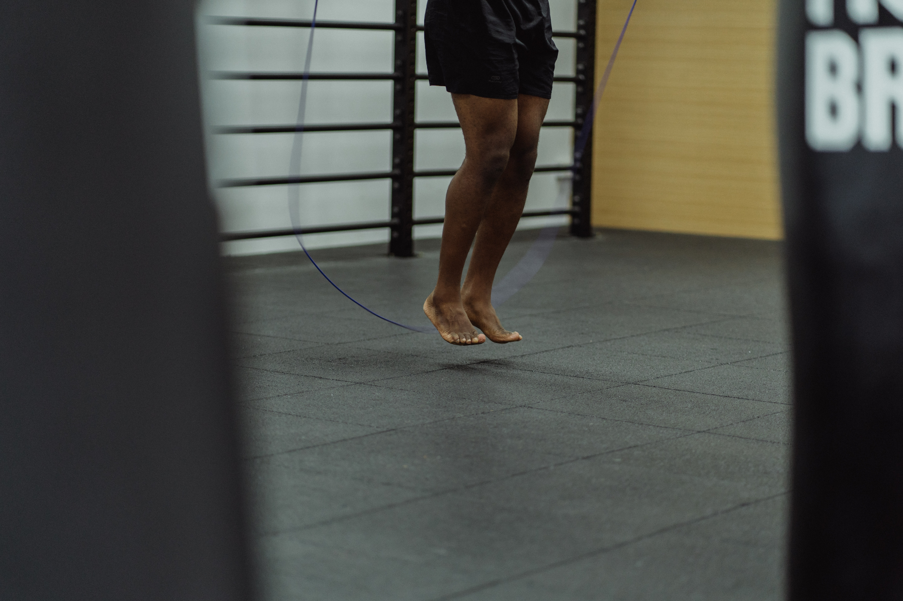
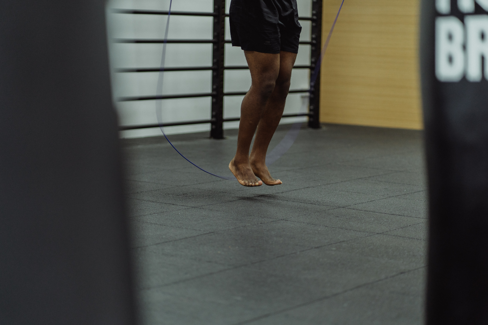

LISS og HIIT LISS (Low-intensity steady-state) Denne stil af cardio er baseret på at man træner cardio I et lavere men fast tempo. Eksempler på denne form for træning kan være cykling, gå gang eller svømning og løb i et lavere tempo. Hvis man supplere sin træning med LISS skal man regne med at bruge 40-50 minutter på sin cardio træning 2-3 gange om ugen, samtidig med at man styrketræner 3-4 gange om ugen. HIIT (High Intensity Interval Training) Denne stil af cardio bygger på at man øger tempoet i sine cardio træninger. Ved HIIT er der fokus på at man får pulsen hurtigt op, man skal gerne have sin puls op på et spænd mellem 148-175 slag per minut. Ved at man træner meget intenst kan man nedsætte tidsperioden for sine cardio træninger. Hvis man vil supplere sin træning med HIIT skal man sigte efter at bruge 15-20 minutter pr session, 2-3 gange om ugen. Former for HIIT kan være løb i hurtigt tempo, gå gang med stigning, stairmaster, sjipning og svømning i højt tempo LISS anbefales ofte for nybegyndere der gerne vil supplere deres træning med cardio, da det for kroppen ikke er ligeså krævende som HIIT. Dog kan man hen af vejen forsæge at skifte sin supplering til HIIT da kroppen stille og roligt vender sig til at man dyrker cardio ved siden af styrketræningen. Der er ikke en form der er bedre end den anden, men oftest vælger man udfra tidsforbruget og hvad der passer ens egen hverdag. Begge typer har fokus på at man mister kropsfedt, og man opnår de samme mål ved begge former for cardio træning
Styrketræning kombineret med cardio
Styrketræning og cardio er to forskellige træningstyper og ofte ser man at personer kun benytter sig af den ene eller den anden træningstype. Mange styrketrænere opfatter ofte cardio som en træningstype der medfører at man mister muskelmasse. Dette kan være tilfældet hvis man som styrketræner begynder at dyrke cardio i større mængder. Grunden til dette er at en større mængde af cardio nedsætter muskel glykogenniveauet, hvilket medfører at kroppen begynder at nedbryde proteiner (Muskler) for at få energi. Derfor hvis man skal kombinere styrketræning og cardio skal man ofte forsøge at tilpasse sin mængde af cardio så man ikke opnår stadiet hvor man begynder at nedbryde muskler. Der vil være fokus på 2 forskellige måder at supplere sin styrketræning med cardio på.
 
